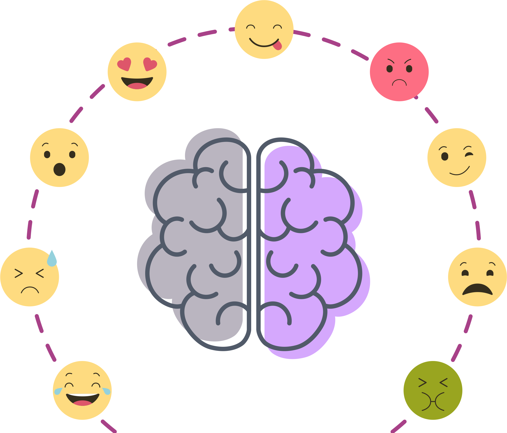

Hello, my name is
Laura Gao
I am
About This Website
We all commit thousands of actions every day, but do you know why you do things the way you do? Have you ever wondered why your stepmom is just so stubborn, or why your grandpa always loves a good laugh? Well, guess what? This is why self-awareness is so important!
As Ancient Greek mathematician and philosopher Aristotle said, “Knowing yourself is the beginning of all wisdom.” This is why, as an ambitious high school student, I’ve decided to take some personality tests to help myself understand my own strengths and weaknesses, so that I can go on to choose a suitable career. Here, on this website, I bring to you the 5 personality tests that I found the most helpful in helping me gain a deeper understanding of myself.Peering through the lenses, out at the world

“Knowing yourself
is the beginning
of all wisdom.”
—Aristotle
Knowledge Survey
The Knowledge survey on MyBlueprint says that my top subject area is computers. The areas that I know the most about are 94% computers, 89% mathematics, 83% business, 83% creative arts, 78% social science, and 72% language arts.
- Computers – careers include computer science and computer programming
- Mathematics – develop problem solving and logical reasoning skills
- Businesses – helps you understand how a business operates.
- Creative arts – helps you develop artistics abilities and techniques
- Social science – helps you understand the society we live in, topics include history, politics, law
- Language arts – helps you develop English language skills
How knowing this will help me:
I guess that I am really interested in computers, though I wouldn’t necessarily agree that it is my number one. Or maybe it is, I don’t know. I am already planning to do a lot of computer science in the next few years of high school. I’m writing the test for AP computer science either in grade 10 or 11, and I want to take the grade 10 and 12 computer science courses. I explore a lot of technology in my free time, from networks to installing operating systems to using lots of software such as those from the Adobe Creative Suite (including Photoshop). I’ve taught myself the basics of object oriented programming in Python, and I plan to expand on these skills in the future by building bigger and better programs.
As for careers, I have considered becoming a computer programmer. Though I havne’t learned much about the working environment and I’m not sure if I will enjoy 8 hours a day sitting in front of a screen. Currently, I have to spend 4-5 hours a day on a computer for schoolwork, and my eyes already get sore from this.
One thing that I like for sure, however, is exploring new emerging technologies, such as...
Artificial Intelligence!
Genetic Modification!
and...

Neural Networks!
I think I would enjoy a career working on the front line of technological progress, working to develop these new technologies.
According to the survey, my second biggest interest is math. Ever since I learned about Kurt Gödel’s Incompleteness Theorem, I had a strong passion for math. I have considered being a mathematician and mathematics professor as a career. I think that I would enjoy working on solving great mathematical problems in the environment of a good university, with ideas and knowledge constantly flowing around, and surrounded by fellow intellectuals just as passionate about math.
Work Values Survey
Question: What do you value in your work?
My main goal when choosing a career is to find one that I am really passionate about. This doesn’t necessarily mean a career that I enjoy doing, for example scientists may not always enjoy getting their hands wet in deep murky slime when doing experiments, and programmers may not enjoy spending 5 hours troubleshooting a small problem. However, if the scientist is really passionate about researching a cure for cancer, or the programmer about building the first artificial general intelligence, then I would love to have their career.
I want a career where I have an end goal that I want to achieve, and I can work really hard to achieve that goal. One of the work values on the survey was a “lack of pressure,” and this sounds absolutely abhorrent to me. I would never want a job with a lack of pressure. I know that a lot of people don’t enjoy working hard, but I am not one of those people. I love working hard, and I am the type of person that would put in 10 times the required effort on any project, such as programming this website from scratch. Honestly, it hurts me when I do a project without working hard, and I would absolutely hate a career that I didn’t have to work hard in.
That being said, I want a career that I’m extremely passionate about, so that I can devote a lot of time and effort into achieving a goal. For example, Elon Musk is passionate about ensuring the survival of humanity as a species (“backing up the humanity hard drive”), so he set a goal of establishing a self-sustaining civilization on Mars. Then, he works extremely hard to achieve this goal—founding a company from scratch, using creative engineering to bring down the price of rockets, and designing the rapidly-reusable super-heavy rocket Starship.
Falcon Heavy Launch
I want a career like that—where I have a goal that I’m super passionate about achieving, and could work super hard every single day to get closer to the goal. This is my number one work value that I want to have for my future career. Nothing else, not recognition, not power, and not even economic security is as important to me. If you feel that this is unjustified, and you want to know why, feel free to ask. I guarantee you that I have a justified reason.
"I would rather die
of passion than
die of boredom."
—Vincent Van Gogh
How knowing this will help me in the future:
Firstly, I should try to identify my passions. There are a few things that I know that I am really passionate about, but I don’t want to list them here because a) they’re too personal and b) they use a lot of effort to explain the reasoning, and I don’t have the space here to fully explain all of it.
Once I set my passion to focus my career on, I should devise a plan and set reasonable goals to achieve it. This is one of the reasons that I am so interested in entrepreneurship—because being an entrepreneur allows you to build a company with the goals of achieving your passion. Building a company is like raising a child: it is something you deeply care about, and you would nurture your company with the hopes that it grows big and healthy. Just like a child, you would be deeply saddened if your company falls apart, and just like a child, you would spend thousands of hours working hard on your company to keep it thriving.
(And like I said before, I love to work hard. I would really enjoy working hard on building a company.)
Along my journey towards achieving my goals, I’d have to pick up a lot of new skills on the way, acquire a lot of new knowledge, and meet a lot of new people, just like how Elon Musk had to teach himself rocket science from scratch when starting SpaceX. I am happy with this because I am a lifelong learner and would love to continue to expand my skillset, even as an adult.
In the future, with automation replacing many jobs, there isn’t really a single job that is completely safe. Factory workers, programmers, stock traders, teachers, doctors, and even artists may get replaced by machine intelligence. However, one job that wouldn’t get replaced for a long time is entrepreneurship. Can you imagine a world where businesses are created and owned by robots? I definitely can’t.
Holland Hexagon Personality Test
Created by American Psycologist John Holland
On this survey, my scores for the following personality tests were either a 9 or 10.
Since personality tests are not accurate to the exact number, I don’t think that the difference between a 9 and a 10 is very significant. I think that for these 4 personality types, I am pretty equal between them.
I scored the lowest for the conventional (organizer) personality type, and I low-key agree with this result. One of my biggest weaknesses is that I get bored and unstimulated too easily. I enjoy living life with a fast pace, with unexpected challenges constantly being thrown in my direction. I like to keep moving, and doing different things based on what I feel in the moment.
However, I still enjoy keeping an organized workspace, and I work a lot on time management. It’s not that I can’t keep a routine, as I have kept 2 of my 2020 new year’s resolutions of keeping a new routine. It’s just that I get bored easily.
How this will help me in the future:
I don’t want an unfulfilling life with an unfulfilling job that brings me the same repetitive tasks every day. The type of job that I would definitely not want to have is one that is conventional, has the same 9-5 work hours every day, with no novelty. Jobs such as accounting, flipping burgers at McDonalds, and data processing work are ones that I would never want to have.
Interests Survey
The Interests survey on MyBlueprint says that I am a visionary. The two primary interest traits for visionaries are:
- Enterprising – often involve business, starting and working hard on projects. Requires learning skills and willingness to take risks
- Artistic – creativity, work that is done without following a clear set of rules, environment with lots of change and variety
I am 94% enterprising and 88% artistic.
How this will help me in the future
Visionaries
- Love to take risks
- Work without too much constraint/structure
- Are good leaders
Based on this, I think being involved with business, especially entrepreneurship, is good for me. Starting a business requires good leadership, and it will allow me to work in an environment without much constraint and with a fast pace. This is the environment that I enjoy working in the most.
I’m also thinking about being an astronaut, especially being one of the first people to go to Mars, for these reasons:
- This is a huge challenge and requires a lot of training and hard work, which is something that I’m willing to do, because all this effort will pay off.
- There is no constraint or structure – when you’re one of the first to go to Mars, you’re working with a dynamic team of like-minded people, and together you get to establish the order and structure of how this new civilization would be run.
A third career that I am interested in is being an independent online content creator. With this life, I can explore new styles and be creative as I want without ANY constraints whatsoever, because you and only you are in charge of your own publication. I love being creative and just letting my ideas flow across the page without worrying about anything, and I think that creativity is one of the most important skills you can have in our modern society full of depresso expresso phone-addicted people (with an outdated educational system designed during the great depression to pump out factory workers).
Even though this career is not listed as a conventional job on MyBlueprint or that online archive of all jobs, it is only because it is so new that it didn’t even prominently exist 20 years ago. Even Ms. Bearg said, “There are way more unconventional jobs today than there was 30 years ago.” Did you know that YouTube gets a billion video views per day? In our modern information world, the Internet is so ingrained into people’s ways of life, that I think that this is definitely a prominent career path. Unconventional doesn’t equal not doable.
For school, I guess I’ll try to let myself explore my creativity more and to not consciously put much constraints on myself. For school assignments, I discovered that I used to have bold and unconventional ideas on how to do it, such as coding a website by myself, but have often thought that I shouldn’t take my approach because it is too risky and too unlike what all others would do. However, armed with this self-awareness knowledge, I will take more risks with assignments and allow myself to take a more creative approach with projects.
"Occupations are constantly shifting and becoming different. By the time you do grow up, there'll be a whole bunch of new jobs out there and the jobs that were there will have changed radically. "
-Phillip Jarvis, Vice President of Partnerships at the National Life/Work Center
16 Personalities Test
(https://www.16personalities.com/)
For a long time, I thought that personality tests were inaccurate and not a good way to classify people. But as the old saying goes, there’s a first time for everything, and today (Feb 10) I was proven wrong. Today is the day that I took the 16 personalities test, and the results surprised me. I felt a strong connection to the insights of the personality type I got, such as I believe that sarcasm is a sign of intelligence.
The 16 personality test is the one that I found to be the best one out all the ones I took. This is why I've decided to put this one at the very end, in order to save the best for last.
This survey said that I fall into the Debater (ENTP) personality type. According to the website, these are the key points of debaters:
• Loves to argue and stand up for issues that they care about, would break rules that aren’t in their agreement
• Independent thinker and original, does not care much for traditional ideas of society, vivid imagination
• always striving to learn more and improve themselves
How these results will help me
Because Debaters…
- Get bored easily
- Feel excited in unfamiliar situations, and
- Do not appreciate conventional wisdom
…I think I would not do very well in a traditional 9-5 job. It is in more dynamic workplaces with competition that I would thrive.
As well, Debaters love environments with lots of challenges, so that they can use their mental muscles to devise new ideas, approaches, and push the limits to their creativity. This is another reason why I think I would not be suitable for a low level regular job – because I don’t think that I’d be challenged enough and that I wouldn’t be able to improve myself by being forced to devise new approaches to solving problems.
Some suggested careers are entrepreneurship, engineering, and stock trading, because these careers require a lot of brainpower and devotion to overcoming challenges.
I will also use this information to help me in school, by working harder to expose myself to challenges, such as signing up for a difficult course in course selection. As well, I want to try to not get intimidated by authority so easily and to stand up for what I believe in.
Mental Wellness
In addition to personality, interests, and knowledge, another important aspect of me is what goes on inside my head—namely, how mentally healthy I am. To help me evaluate this, I took the Teen Wellness Compass Self-Assessment. In the test, there are 8 areas of focus: organization, stress resilience, relationships, rest and play, emotions, spirituality, school and work, and care for body.
Organization: I am happy with how I spend my money, as I don’t indulge in buying unnecessary things as often as I used to do. I do have many systems for organizing my time (the Eisenhower Matrix, the time boxing technique, and using a planner), but sometimes I still fall victim to procrastination. I am pretty much always on time for commitments. Score: 77
Stress resilience: Even though I have a lot of commitments and projects with tight deadlines, I think I cope with stress pretty effectively. I try to be proactive instead of reactive, dealing with challenges by causing things to happen rather than waiting for things to happen and reacting to it. Score: 85
Relationships: I have positive relationships with most people in my life, and I enjoy spending time with them. The main thing that I am not doing very well is making time to spend a lot of time with family members and friends that I care about, because I am so busy with commitments that it’s hard for me to find time. Score: 72
Rest and play: I feel like I spend too much time on doing work and working excessively hard on assignments (such as this one), and not enough time on activities that I truly enjoy doing. I often find myself spending up to 40 hours on a single assignment, when other people get a similar mark by spending half the time. Score: 51

Emotions: I try hard to deal with my emotions well, and most of the time I do. However, when I am stressed about an assignment or when I am unhappy about a low mark, I tend to be prone to be snappy at people and not manage my emotions as well. Score: 60
Spirituality: I never strongly believed in a single religion, or had a very clearly defined meaning for my life. Instead, I’m more of an agnostic and I’m open to the possibility of all religions. I do have a set of morals that I follow to the best of my ability. Score: 59
School and work: My grades in school are good by society standards (Semester 1 average was 95.2). I am very involved in school, as I’m part of multiple clubs, sports teams, and executive boards. The only thing that I’m unhappy about is that I spend so much time on doing school related assignments that I neglect other responsibilities such as being with friends. Score: 89
Healthy body: I have a routine where I exercise for 7-8 minutes every morning, aim to eat 50% fruits and vegetables in my diet, and drink at least 1.7 litres of water per day. Overall, I feel pretty good about how I care for my body. However, one area that I can improve on is having a more consistent sleep schedule, as I often stay up late the night before a project is due. Score: 90